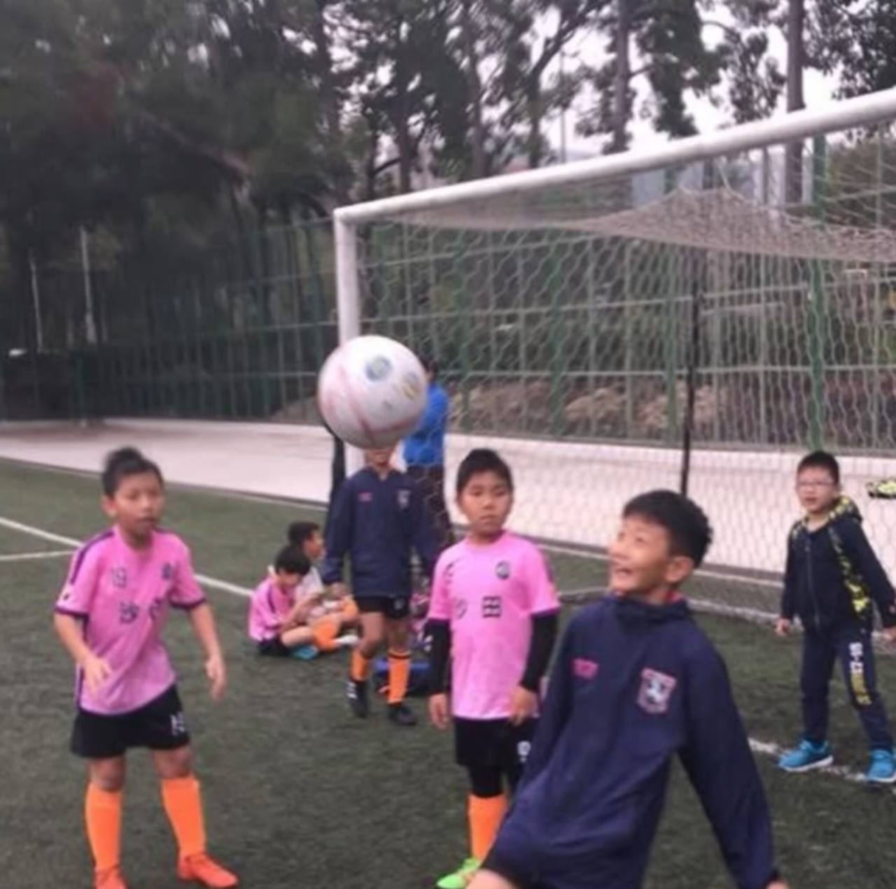
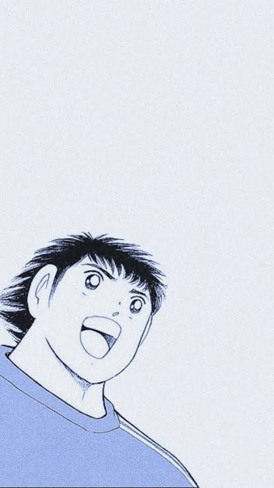
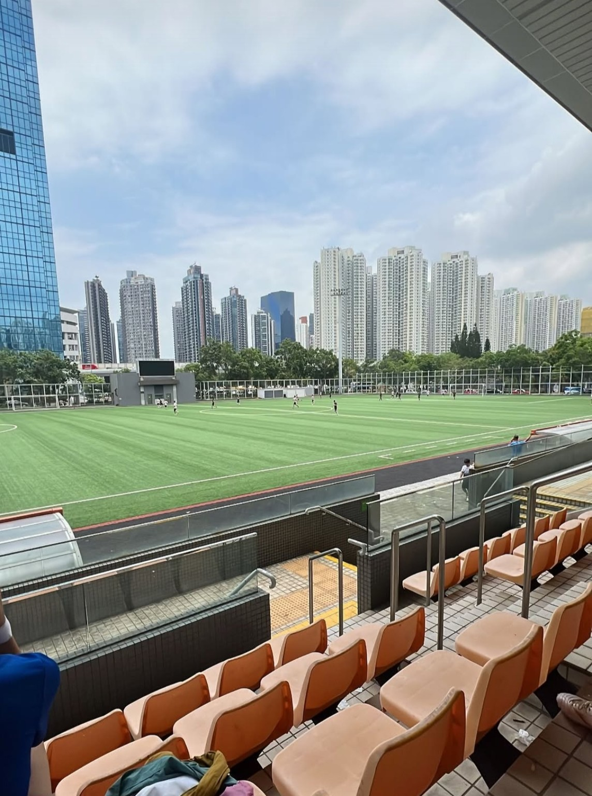

Football
A journey from Kitchee through Sha Tin and South China to BC Rangers.
Hi, I'm Freeman. I'm a university student studying Artificial Intelligence, and football is an important part of my life.
This website is a little introduction to the things I enjoy, the experiences that shape me, and the person I'm becoming.

01 / Football
Football has taught me about teamwork, discipline and growing through every challenge.
I have been playing football for 12 years. When I was seven years old, my parents encouraged me to join a football club called Kitchee. That was where my football journey began.
I am a Year 2 student in Artificial Intelligence. Nowadays, AI is becoming a worldwide trend. Every industry is using AI techniques, such as medicine and architecture, to complement their weaknesses. Therefore, I enjoy exploring Artificial Intelligence, design and how technology can turn ideas into something real.
A simple timeline of the experiences that helped shape who I am. Replace these prompts with the moments you want to share.
[Add a short story about where you grew up.]
[Add a meaningful football experience.]
[Add what you are learning and exploring now.]
Two spaces for projects, activities or memorable experiences — not necessarily professional work.
My football journey began at Kitchee in 2014. I later played for Sha Tin and South China, and I now play for BC Rangers. Each club has shaped my growth as a player, teaching me teamwork, discipline and resilience.
My interest in biology has grown since 2018. I represented my school in an Asia-Pacific biology competition, reaching the semi-finals. Preparing for the competition helped me develop scientific reasoning, careful observation and problem-solving skills. Now studying Artificial Intelligence, I am interested in how technology can support biological research.
“Cherish Every Encounter.
Always Be Grateful for what you have”
Thanks for taking the time to get to know me.
Feel free to connect with me on Instagram.
Instagram · @freemancheung412 ↗
Back to the top ↑